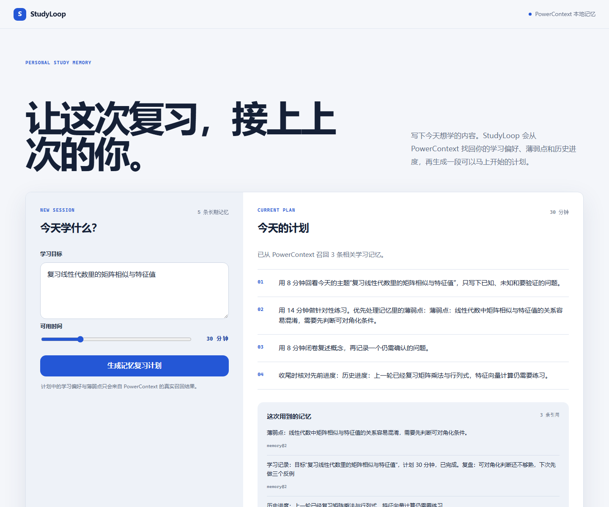

01 / 问题
笔记很多，真正的上下文却总是丢失。
学完一章、关掉页面、隔几天再打开，学习者往往只记得“我学过”，却忘了上次卡在哪里、什么方法有效、下一步该练什么。
StudyLoop 把学习过程里对未来有用的事实写进 PowerContext。下一次不必翻聊天记录，也不用重新解释自己。
02 / 工作方式
一段计划，三个可验证动作。
-
01
写入真实学习上下文
保存学习偏好、薄弱点、进度和每次复盘。每条内容都进入同一个独立 Scope。
runtime.memory.for_scope(scope).remember(...) -
02
为新目标召回相关记忆
用户输入“矩阵相似与特征值”，应用使用 SQLite FTS 搜索历史学习记忆。
SearchMemoryRequest(query=goal, mode="fts") -
03
生成可解释的计划并闭环
计划只使用实际返回的证据。完成后写下复盘，再作为 outcome 记忆保存。
MemoryHit → plan evidence → new outcome
03 / 技术验证
记忆必须能被指出来。
页面同时展示召回摘要、计划步骤和引用的 Artifact Revision。评审可以打开 SQLite 数据目录，也可以用同一组样例复现。
- 存储
- PowerContext Embedded Runtime + SQLite
- 检索
- Scoped Memory FTS
- 验证
- 样例计划、记忆列表、citation round trip
cd qoder
uv sync
uv run studyloop
RECALLED MEMORY
薄弱点：线性代数中矩阵相似与特征值的关系容易混淆，需要先判断可对角化条件。
atomic-memory/...@revision · entry citation
04 / 复现
三步看到记忆真的发挥作用。
1输入“复习线性代数里的矩阵相似与特征值”，选择 30 分钟。
2查看计划里的“薄弱点”依据和引用的 Memory Revision。
3保存一句复盘，刷新页面，确认新的 outcome 出现在长期记忆列表。
StudyLoop